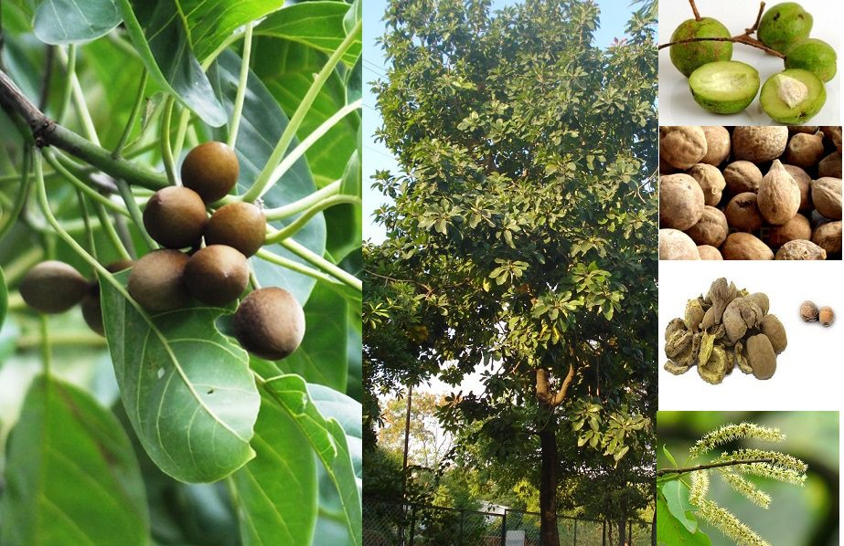

Basonym of Drug
Vibhitaki
Botanical Name
Terminalia bellirica
Family
Combretaceae
Vernacular Names
- English: Belleric Myrobalan, Belliric Myrobalan, Bastard Myrobalan, Beach Almond, Bedda Nut Tree
- Hindi: Baheda, Bahera, Phinasa, Bhaira, Bahuvirya, Bhutvaas, Kalk, Karshphal
- Telugu: Tanikaya, Taani, Tadichettu, Balla, Taadi, Tandra, Tondi, Karshaphalamu, Vibhitakamu, Tandrachettu, Bhutavasamu
- Tamil: Akkam, Todikai, Thanakkai, Tanri, Tanrikkai, Tani, Tanitamdi, Toandi, Tokhandi, Tamrikay, Kattuelupay, Semmaram, Thandi, Vibidagam, Thandri, Akkam
- Bengali: Baida, Bohera, Behri, Baheda
- Marathi: Behda, Behada, Ghaatinga, Bahela, Bahda
- Gujarati: Baheda, Beda
- Punjabi: Baheda
- Arabic: Baleelaj
- Farsi: Baleel
- Kannada: Shanti Kayi, Tare Kayi, Tode, Thani, Tharo, Behara, Thare, Vibhitaka, Shanti Mara, Vibhita, Tare Mara, Tara Mara
- Malayalam: Thaanni, Thani, Adamarutha, Tusham, Thannymathan, Thannikka
- Manipuri: Bahera
- Oriya: Bahada
- Konkani: Goting
- Urdu: Bahera
- Assamese: Bauri
- Nepali: Barro
Sanskrit Synonyms
- Karshaphala
- Aksha Phala
- Kalidruma
- Vindyajata
- Kalpadruma
- Kasaghna
- Vibhedaka
- Bahuvirya
- Kalidruma
- Bhutavasa
- Kaliyugaalaya
- Madhujiva
- Dharmadweshi
- Haryaksha
- Kushalastusha
- Vasanta
- Vaasanta
- Aksha
- Vindhyajaata
- Tilapushpa
- Romaharshana
- Samvartaka
- Kalko
- Haaryo
- Tailaphala
- Kalkivriksha
Morphology
Terminalia bellirica is a large tree growing up to 25-50 meters in height. The leaves are simple, alternate, elliptic or elliptic obovate, with a long petiole, crowded at the shoot tip, leathery, and pubescent when young. The flowers are small, greenish-yellow in axillary spikes with a strong offensive smell. The fruit is a drupe, obovoid, gray in color, slightly 5-ridged, velvety, and contains one stony hard seed.
Distribution
The tree is found almost throughout India, particularly in the lower parts of hills.
Classical Categorization
- Charaka: Jwarahara, Kasahara, Virechanopaga
- Sushruta and Vagbhata: Mustadi group of herbs
- Bhavaprakasha Nighantu: Haritakyaadi Varga
- Kaiyadeva Nighantu: Aushadi Varga
- Dhanvantari Nighantu: Guduchyaadi Varga
- Raja Nighantu: Aamraadi Varga
- Shodala Nighantu: Guduchyaadi Varga
Medicinal Qualities
- Rasa (Taste): Kashaya (Astringent)
- Guna (Qualities): Rooksha (Dry), Laghu (Light to Digest)
- Vipaka (Taste Conversion After Digestion): Madhura (Sweet)
- Veerya (Potency): Ushna (Hot)
- Sparsha (Touch): Cold
- Effect on Tridosha: Balances Kapha and Pitta
Therapeutic Uses
- Bhedanam: Eases motion, has a laxative action, useful in Triphala.
- Kasanashanam: Relieves cough and cold.
- Netrahitam: Good for eyes.
- Keshya: Improves hair quality and promotes hair growth.
- Kruminashanana: Relieves worm infestation.
- Vaisvaryanashana: Relieves hoarseness of voice.
- Detoxification: Detoxifies blood, lymph, muscles, and fatty tissue of the body.
Vibhitaki Seed Kernel
The seed kernel of Vibhitaki is useful in:
- Trut: Excessive thirst.
- Chardi: Vomiting.
- Balances: Kapha and Vata.
Dosage
3 – 6 grams in divided doses, or as advised by an Ayurveda doctor.
Important Ayurveda Medicine
All medicines with Triphala contain Bibhitaki. Examples include Triphala Ghrita, Triphaladi Taila, etc.
Pharmacological Activities
- Antioxidant
- Antimicrobial
- Antidiarrheal
- Anticancer
- Anti-hypertensive
- Hepatoprotective
- Antipyretic